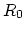
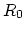
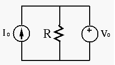
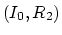

- While various voltage sources such as batteries are very common
in everyday life, current sources are not widely available. One type of
current source is the photocells, which generates current proportional
to the intensity of the incoming light. Also, certain specially designed
transistor circuits can generate to output constant current. Moreover,
as discussed in class, any current source can be obtained by converting
a corresponding voltage source. Design a current source with mA
and
by converting a voltage source. Find its volate
 and internal resistance .
and internal resistance .
Solution:
,
.
- The circuit below (assuming , , ) was
discussed in class in terms of power delivery, absoption or dissipation
of each element in the circuit. Now redo the problem assuming the polarity
of the voltage source is reversed (negative on top).

Solution: The current through the resistor (upward( is ,
the current through the voltage source (downward) is .
The power delivered by the voltage source is therefore
Watts, the power dissipated by the resistor is
Watts, and the power absorbed by the current source is 2 Watts, i.e.,
.
- The output resistance of the power amplification circuit of
a Hi-Fi system is
and the output voltage is
. Find the power received by the speaker, the total
power consumption, and the power efficiency of the circuit, for
each of the three speakers with resistance: ,
, and
Solution: The power received by the load (speaker) is
and the power efficiency is
where ,
.
- When ,
Watts, ,
the total power is
Watts.
- When ,
 Watts, ,
the total power is
Watts.
Watts, ,
the total power is
Watts.
- When
 ,
Watts, ,
the total power is
Watts.
,
Watts, ,
the total power is
Watts.
- Find the optimal load resistance
 so that it receives maximal
power from the current source with internal resistance
and power transmission line resistance .
Find the maximum load power and the power loss along the transmission
line.
so that it receives maximal
power from the current source with internal resistance
and power transmission line resistance .
Find the maximum load power and the power loss along the transmission
line.

To verify your choice of load resistance, show that the power consumption
of the load will always be lower than this maximum when its resistance is
either increased or decreased by ten percent.
Solution:
First convert current source to voltage source with
 and . To maximize load power consumption, let
. The current is
. Load power
is
, power loss on transmission line is
When ,
,
When
and . To maximize load power consumption, let
. The current is
. Load power
is
, power loss on transmission line is
When ,
,
When  ,
,
,
,
- Convert the following circuit into (a) an equivalent current
source
and then (b) an equivalent voltage source
. Give an expression for the load so that it
will receive maximum power from the source.

Solution:
(a) Convert voltage source on the left to a current source
in parallel with the current source .
The overall current source is therefore:
(b) Convert the overall current source above to a voltage source:
(c) For to receive maximum power, we need